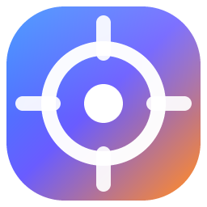
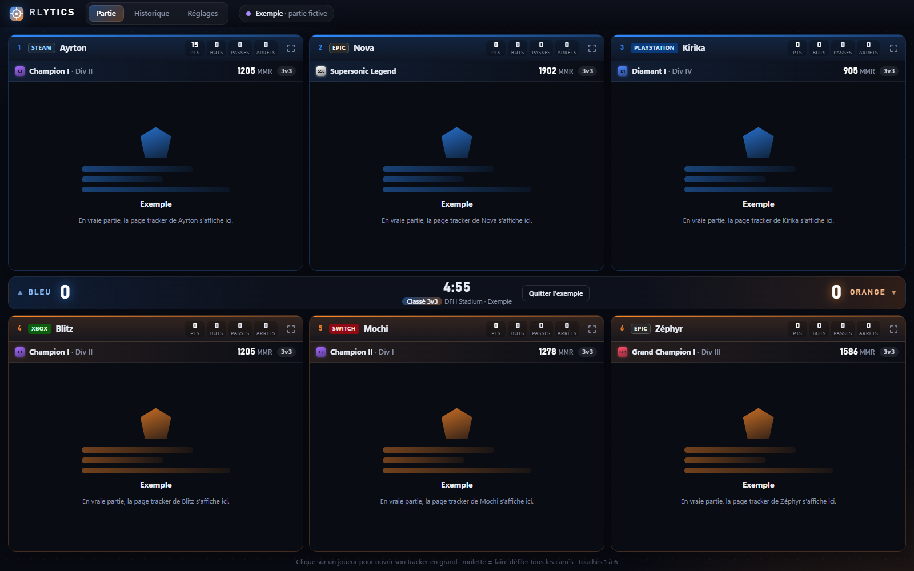
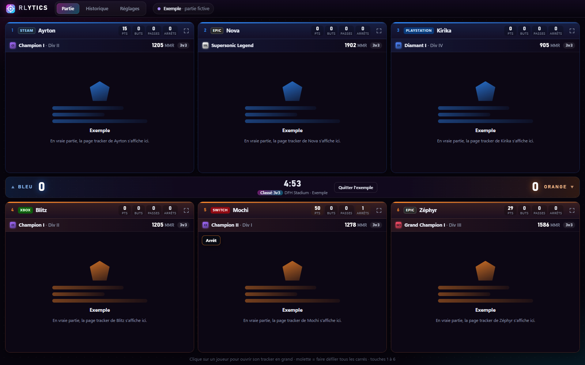
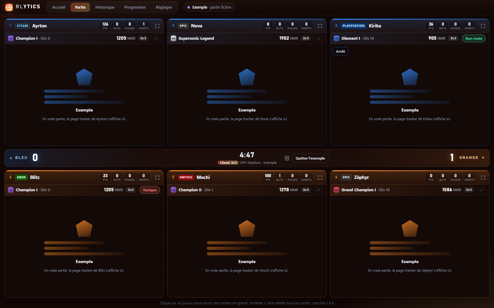
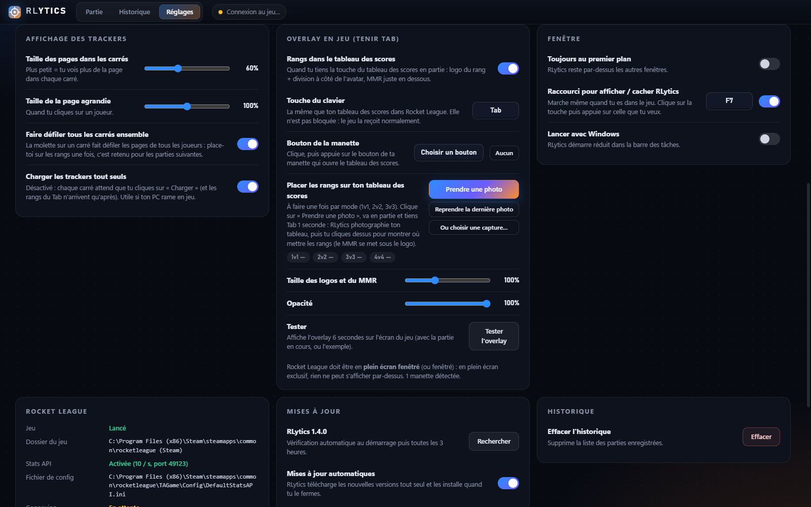

▦
Le tracker de chaque joueur
Dès que la partie commence, RLytics ouvre la page tracker de chaque joueur : 2, 4 ou 6 carrés selon le mode. Clique sur un joueur pour l'avoir en grand, ou ouvre-le dans ton navigateur.

RLYTICS TéléchargerPour Rocket League sur PC · Gratuit
RLytics affiche le tracker de chaque joueur de ta partie et met leur rang, leur division et leur MMR directement dans ton tableau des scores quand tu tiens Tab.

Dès que la partie commence, RLytics ouvre la page tracker de chaque joueur : 2, 4 ou 6 carrés selon le mode. Clique sur un joueur pour l'avoir en grand, ou ouvre-le dans ton navigateur.
Tiens Tab (ou le bouton de ta manette) : le logo du rang, la division et le MMR s'affichent à côté de chaque joueur, pour le mode que tu joues. Appuie sur F9 pour voir leurs rangs 1v1, 2v2 ou 3v3.
RLytics lit la Stats API officielle de Rocket League : c'est le jeu lui-même qui donne la liste des joueurs. Rien n'est injecté, la mémoire du jeu n'est jamais lue.
Chaque partie est enregistrée : score, résultat et joueurs, avec un lien vers leur tracker. Pratique pour retrouver ce coéquipier incroyable… ou ce smurf.
7 thèmes de couleurs, et des thèmes anime avec leurs personnages : My Dress Up Darling, Akame ga Kill, The Quintessential Quintuplets, The Future Diary, Bunny Girl Senpai, Haimiya-senpai, Kaoru Hana wa Rin to Saku, Re:Zero, Mushoku Tensei, Jujutsu Kaisen (Gojo et Sukuna), Chainsaw Man (Reze et Asa Mitaka), Uma Musume (Agnes Tachyon), Roshidere (Alya et Yuki), Akame ga Kill (Esdeath), Firefly Wedding (Satoko), Kill la Kill (Ryuko). La page d’accueil (horloge, personnage, plein écran) est parfaite sur un 2e écran.
Les nouvelles versions se téléchargent toutes seules et s'installent quand tu fermes RLytics. Tu n'as rien à faire.
Une seule pastille par joueur, qui tient dans sa ligne : le logo du rang et la division en haut, le MMR juste en dessous. Les SSL n'ont pas de division, les bots n'ont rien.
Le réglage se fait une fois par mode : tiens Tab une seconde en partie, RLytics prend une photo de ton tableau, puis tu cliques 3 fois dessus pour montrer où mettre les rangs.
Envie de voir le rang 1v1 ou 3v3 de tes adversaires pendant une partie 2v2 ? Appuie sur F9 : les rangs du Tab passent au mode suivant (touche modifiable dans les réglages).
Illustration : pseudos et rangs inventés.



Oui. Windows affiche ce message pour les programmes qui n’ont pas de signature payante (un certificat coûte plusieurs centaines d’euros par an). Clique sur « Informations complémentaires » puis « Exécuter quand même ». Il n’apparaît qu’à l’installation : les mises à jour automatiques ne le déclenchent pas.
RLytics ne touche pas au jeu : il n'injecte rien, ne lit pas sa mémoire et n'ouvre même pas son processus. Il lit la Stats API officielle de Rocket League (prévue par Psyonix pour les overlays) et affiche une fenêtre par-dessus le jeu, comme Discord ou OBS. Il n'y a pas de garantie officielle de Psyonix, mais c'est le même principe que les overlays autorisés.
Des pages publiques de rocketleague.tracker.network, que RLytics affiche comme un navigateur. Les rangs du Tab sont lus dans ces pages déjà ouvertes, sans requête en plus. RLytics n'est pas affilié à Tracker Network : si leur site change, une mise à jour de RLytics peut être nécessaire.
Oui aux deux. Pour la manette, choisis dans les réglages le bouton qui ouvre ton tableau des scores. Les joueurs PlayStation, Xbox et Switch de ta partie sont affichés aussi.
Les pages sont chargées une fois au début de la partie et les animations des thèmes se mettent en pause pendant les parties. Si ton PC est juste, désactive « Charger les trackers tout seuls » dans les réglages.
Pas de compte. Tout reste sur ton PC : réglages, historique, emplacement des rangs. RLytics se connecte seulement à tracker.gg (les pages des joueurs), à AniList (images des thèmes anime) et à GitHub (mises à jour).
Automatiquement : RLytics vérifie au démarrage puis toutes les 3 heures, télécharge la nouvelle version en arrière-plan et l'installe quand tu le fermes (ou tout de suite avec le bouton « Redémarrer »).
Dans RLytics : Réglages → À propos → « Ouvrir le journal ». Ce fichier explique ce qui s’est passé (il reste sur ton PC, rien n’est envoyé). Décris le problème sur la page des signalements et joins le journal si tu veux.